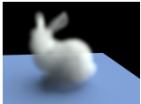
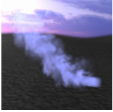

We want to be able to render realistic looking smoke starting by computing single scattering, then implementing multi-scattering.
We don’t have the ability to render smoke with our path tracer from Project 3 so there are a lot of limitations to what types of scenes we could render. Adding volumetric rendering would allow us to render much more complicated and interesting scenes but the challenge would be to adapt our existing algorithm to work with the new algorithm and figuring out how to use the equations given in the research papers and textbook.
We plan to render realistic smoke/gas from point cloud data using volume rendering techniques by modifying our implementation from Project 3. We want the algorithm to be efficient enough for it to be able to render in a decent amount of time even with indirect lighting. We will measure the performance of the project by how realistic our images look and how long the image takes to render.
|  |  |
It would be nice if we could optimize the renderer by implementing ray marching and environment lighting effects. If we can also implement ray marching, we would also measure the quality by the rendering speed. We also want to try rendering fire.
Week 1 - Find/create files needed to render smoke and change raytracer implementation to work with them
Week 2 - Finish single scattering method and start multi-scattering method.
Week 3 - Work on debugging and finishing all parts of the code, and if time permits, add more features.
Week 4 - Work on poster and presentation sessions and video. Get all images for the webpage and complete all parts of the project.